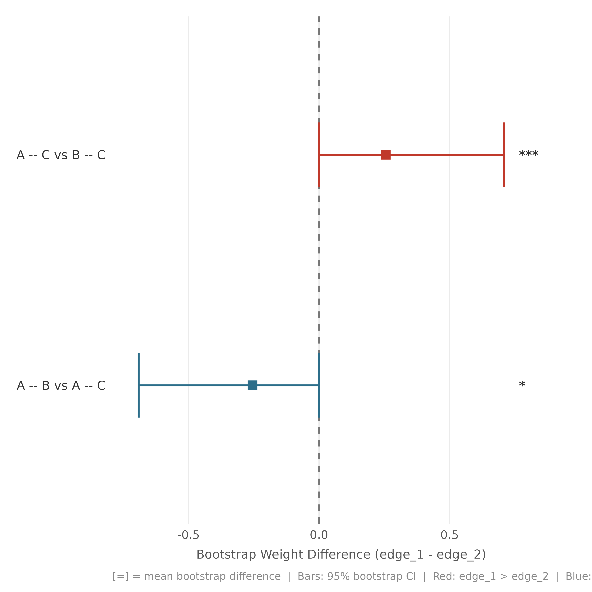

Visualises pairwise edge weight differences from a boot_glasso object.
Each row (linear) or spoke (circular) is one edge pair; the CI bar spans the
bootstrap CI of the difference; a dashed line/ring marks zero.
Red = first edge larger; blue = second edge larger.
Usage
plot_edge_diff_forest(x, ...)
# S3 method for class 'boot_glasso'
plot_edge_diff_forest(
x,
alpha = NULL,
layout = c("linear", "circular", "chord", "tile"),
show_nonsig = FALSE,
nonzero_only = FALSE,
sort_by = c("estimate", "significance", "name"),
n_top = NULL,
pos_color = "#C0392B",
neg_color = "#2C6E8A",
nonsig_color = "#AAAAAA",
ring_color = "#C8C8C8",
label_size = 2.3,
label_color = NULL,
point_size = if (match.arg(layout) == "circular") 2 else 3,
r_inner = 0.38,
r_outer = 0.72,
title = NULL,
subtitle = NULL,
...
)Arguments
- x
A
boot_glassoobject with$boot_edgesand$edge_diff_p.- ...
Currently unused.
- alpha
Significance threshold. Default: inherits from object.
- layout
"linear"(default),"circular", or"chord". The chord layout places all edge names on a unit circle and connects significant pairs with bezier arcs; arc width and colour encode the mean bootstrap difference.- show_nonsig
Include non-significant pairs? Default
FALSE.- nonzero_only
If
TRUE, restrict to edges that are non-zero in the original network (identified via$original_pcor). Useful for EBICglasso results where many edges are regularised to exactly zero. DefaultFALSE.- sort_by
"estimate"(default),"significance", or"name"(linear only).- n_top
Restrict to top N pairs by absolute difference.
- pos_color
Colour when edge1 > edge2. Default crimson.
- neg_color
Colour when edge1 < edge2. Default teal.
- nonsig_color
Colour for non-significant pairs.
- ring_color
Ring colour (circular/chord). Default light grey.
- label_size
Text size. Default
2.3.- label_color
Fixed label colour (
NULL= inherit).- point_size
Size of estimate square (linear/circular).
- r_inner
Inner ring radius (circular). Default
0.38.- r_outer
Outer ring radius (circular). Default
0.72.- title
Plot title.
- subtitle
Plot subtitle.
Examples
set.seed(1)
data1 <- as.data.frame(matrix(rnorm(60), 20, 3, dimnames = list(NULL, c("A","B","C"))))
bg <- Nestimate::boot_glasso(data1, iter = 50, centrality = c("strength", "expected_influence"))
plot_edge_diff_forest(bg)
#> `height` was translated to `width`.
